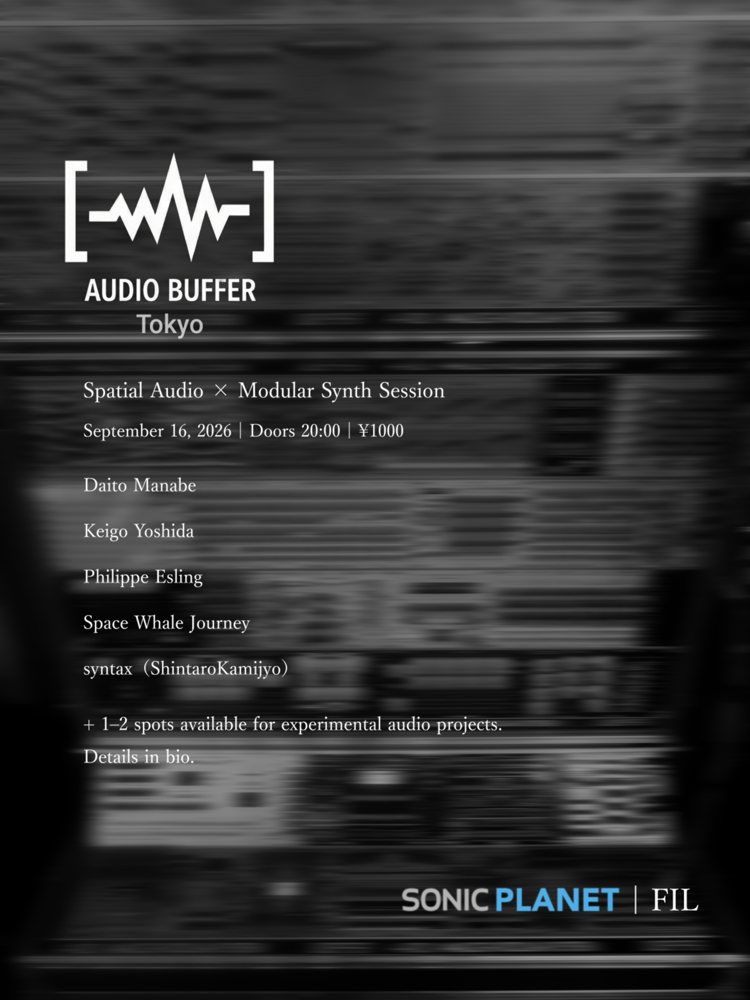

Audio Buffer Tokyo — Spatial Audio × Modular Synth Session

| Audio Buffer Tokyo is an open platform for experimenting with, sharing, and discussing audio technologies, creative practices, and works in progress. Co-organized by Keigo Yoshida (吉田慧悟) and Daito Manabe, this edition focuses on spatial audio and modular synthesis. Participants will explore how modular-synth sounds unfold in space, and how their positions, movements, and overlaps change the listening experience. Equipment, sounds, and ideas in progress are welcome. Connections and spatial sound placement will be tested on site while participants share approaches to sound design, patching, computer integration, production, and performance. No prior experience with spatial audio or modular synthesis is required; visitors are also welcome to observe and listen. Event Information: Date: September 16, 2026 Time: 20:00–23:00 / Doors: 20:00 Venue: FIL, Tokyo Entrance: ¥1,000 Participants: Daito Manabe Keigo Yoshida Philippe Esling Space Whale Journey syntax (Shintaro Kamijyo) |